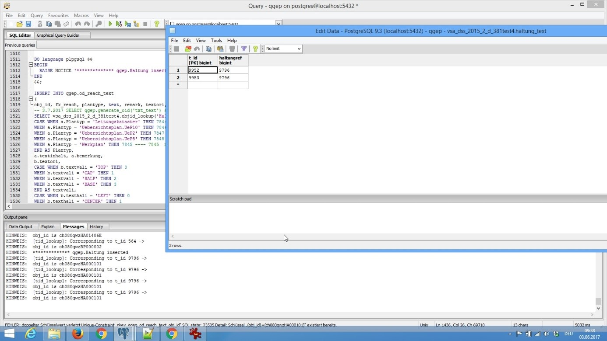

Import INTERLIS Data¶
This represents a guide on how to import data to QGEP from INTERLIS 2 Transfer Format (xtf).
General¶
INTERLIS Import can be done using the ili2pg tool from Eisenhut Informatik and a series of prepared SQL scripts. They will do the following:
- Translation Englisch – German / French (Classes / Attributes)
- Conversion of value list to / from numeric values (Integer)
- Restructuring of data from relational to object oriented modelling
- Conversion of foreign keys TID (integer) to OID (16 characters) again

Step by step¶

Generate ili2pg schema with data model¶
You need a valid INTERLIS 2 Transferdataset, the corresponding INTERLIS model
This example uses the Transferdataset transferdatensatz2015_d_mod.xtf and the VSA-DSS 2015 Modell file with all it’s corresponding models.
We create a batch file for the import with ili2pg to create an ili2pg schema (named vsa_dss_2015_2_d) in postgres importdaten_VSA_DSS_2015_2_d_381.bat.
Adapt for your environment if necessary.
>>> java -jar ili2pg.jar --createEnumTxtCol --import --importTid --sqlEnableNull --createEnumTabs --createFk --noSmartMapping --dbdatabase qgep --dbschema vsa_dss_2015_2_d --dbusr postgres --dbpwd sjib --log importdaten_VSA_DSS_2015_2_d_361.log transferdatensatz2015_d_mod.xtf
Achtung
Very important to have these parameters:
>>> --importTid --sqlEnableNull --createEnumTabs --createFk --noSmartMapping
You need to have the necessary model files (ili) in the same folder as the xtf.
- Units.ili
- Base.ili
- SIA405_Base.ili
- VSA_DSS_2015_2_d_20170602.ili (for Version 2015) –> corrected version relations
(!! 29.5.2017 Beziehung Erhaltungsereignis.Ausfuehrende_Firma 0..* statt 0..1 (Fehlerkorrektur) !! 2.6.2017 Beziehung Abwasserknoten_Hydr_GeometrieAssocRef – {0..*} statt 0..1 (Fehlerkorrektur))
Bemerkung
If the INTERLIS model is German, then the ili2pg schema will have German table names. If the model is French, then the will be in French.
Add additional functions¶
We then need a series of function for the schema transformation form the created ili2pg schema to the qgep schema
- 01_vsa_dss_2015_2_d_304_tid_generate.sql : Function to generate new tid in baseclass and sia405_baseclass when obj_id exists
- 02_vsa_dss_2015_2_d_304_tid_lookup.sql : Function to look up tid – used in 060
- 046_vsa_dss_2015_2_d_304_t_key_object_insert_metadata.sql to create t_key_object if table does not exist.

Add additional view¶
This view is needed for the import queries and has to be added to the ili2pg schema beforehand
- 050_vsa_dss_2015_2_d_304_import_vw_sia405_baseclass_metattribute.sql
Add two other functions¶
- 053_create_key_object_seq.sql : key_objects_seq function copies the latest seq value into table t_key_object
- 054_create_function_meta_organisation.sql : This creates the function meta_organisation. This function allows to generate a new dataset in table organisation and all related needed metatables (baseclass, sia405_baseclass etc.) with an obj_id you specify
Modify Metadata and Organisation data¶
- 055_select meta_organisation_bezeichnung_obj_id.sql
Run this function before importing data from ili2pg to qgep schema, else you will have problems importing fk_dataowner / fk_provider fields if they are not with a valid obj_id but some form of identifier (e.g. with the Transferdatensatz_VSA_DSS.xtf)

Set t_key_object to latest sequence of project so that tid (integer) is correct:
>>> SELECT vsa_dss_2015_2_d_304.key_object_seq;
Set all the matching definitions for missing dataowner (datenherr) / provider (datenlieferant) organisations in table organisation
>>> SELECT vsa_dss_2015_2_d.meta_organisation('VSA', 'ch080qwzOG000098');
>>> SELECT vsa_dss_2015_2_d.meta_organisation('SBU', 'ch080qwzOG000099');
Add your own or modify if needed.
This generates data in table organization (privat) for existing additional dataproviders and dataowners (metadata) with the new function meta_organisation select meta_organisation_bezeichnung_obj_id.sql as template:
>>> SELECT vsa_dss_2015_2_d_304.meta_organisation('VSA', 'ch080qwzOG000098');
You have to select the identifier of existing dataowners e.g. VSA and define a relating OBJ_ID for it e.g. ‘ch080qwzOG000098
If you test this with the transferdataset from VSA replace also SBU:
>>> SELECT vsa_dss_2015_2_d_304.meta_organisation('SBU', 'ch080qwzOG000099');
Run the import queries for your datamodel¶
- 060_sia405_interlisimport.sql for SIA405 2015 import
- 060_dss_interlisimport.sql for VSA-DSS 2015 Import
- 060_dss_2008_xxx.sql for Version 2008
Create a batch job¶
You can also run all the SQL queries in one batch job, here an example:
>>> rem bat and sql in the same directory
set PATH=%PATH%;C:\Program Files\PostgreSQL\9.4\bin
psql -U postgres -d vsa_dss_2015_2_d_304 -f 01_vsa_dss_2015_2_d_304_tid_generate.sql
psql -U postgres -d vsa_dss_2015_2_d_304 -f 02_vsa_dss_2015_2_d_304_tid_lookup.sql
pause
Specify the path variable to postgresSQL on your system
-u sets the user
-d sets the dbname
-f sets the filenam
For more details see https://www.postgresql.org/docs/9.2/static/app-psql.html
Open issues¶
- More than one Text class per element not supported yet – needs CASE WHEN for vali / hali (to do if needed)

- If data is exported from DABASE or other systems it may be that the reach.trace has double point or that is going from wastewater_node to wastewater_node instead of reach_point to reach_point. Looking for a solution to automatically check after import and “clean” linestring.
Possible problems¶
- qgep schema of demodata has missing foreignkeys: Einleitstelle.fs_Gewaessersektor, Versickerungsanlage.fs_Grundwasserleiter, Abwasserknoten.fs_hydrgeomref –> check whether ok in empty schema
qgep. - Need to use
ST_Force3Dfor geometries – because qgep model is now with 3D coordinates - If identifier in table is not unique there will be an error on the import of the table:
>>> FEHLER: doppelter Schlüsselwert verletzt Unique-Constraint „in_od_wastewater_structure_identifier“
DETAIL: Schlüssel „(identifier, fk_dataowner)=(V1.100, ch080qwzOG000098)“ existiert bereits.
********** Error **********
FEHLER: doppelter Schlüsselwert verletzt Unique-Constraint „in_od_wastewater_structure_identifier“
SQL state: 23505
Detail: Schlüssel „(identifier, fk_dataowner)=(V1.100, ch080qwzOG000098)“ existiert bereits.
- Change identifier V1.100 to V1.100.2 in class abwasserbauwerk for Transferdatensatz VSA 2015 to avoid conflict in qgep schema having the same combination identifier / fk_dataowner.